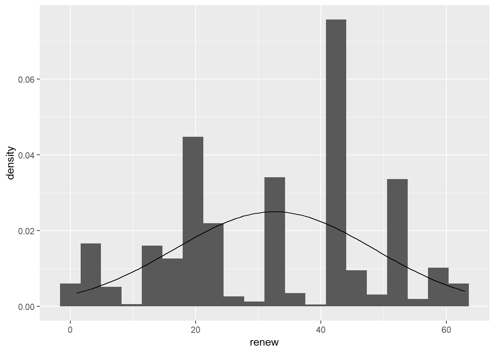
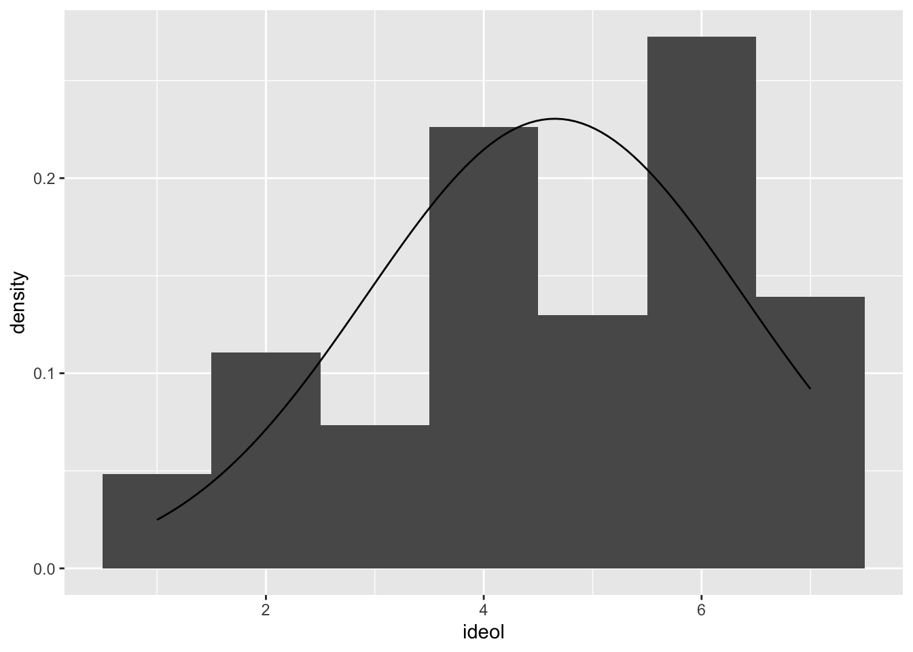
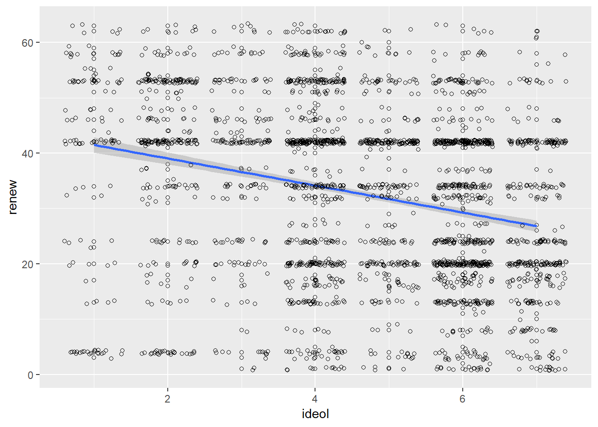
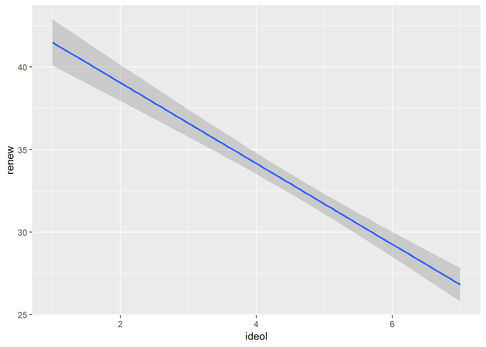
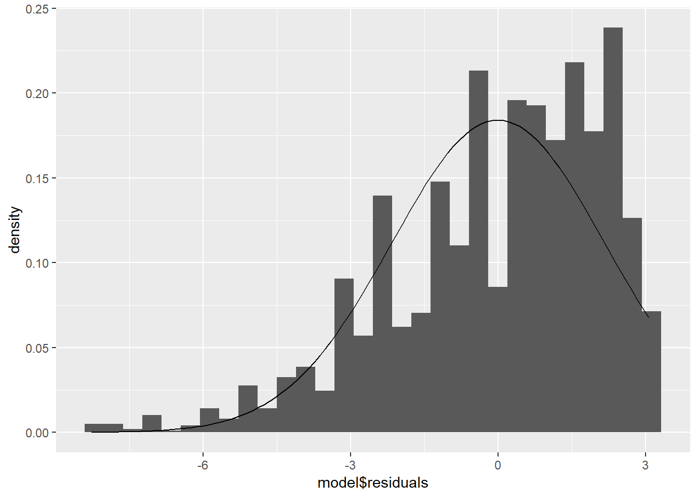
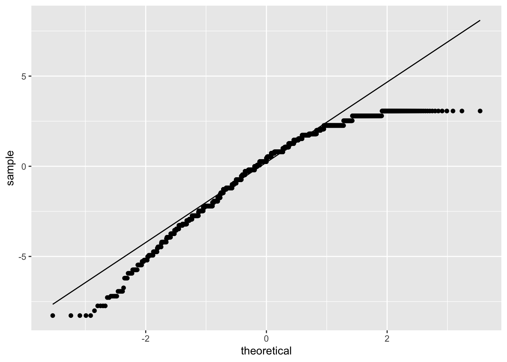
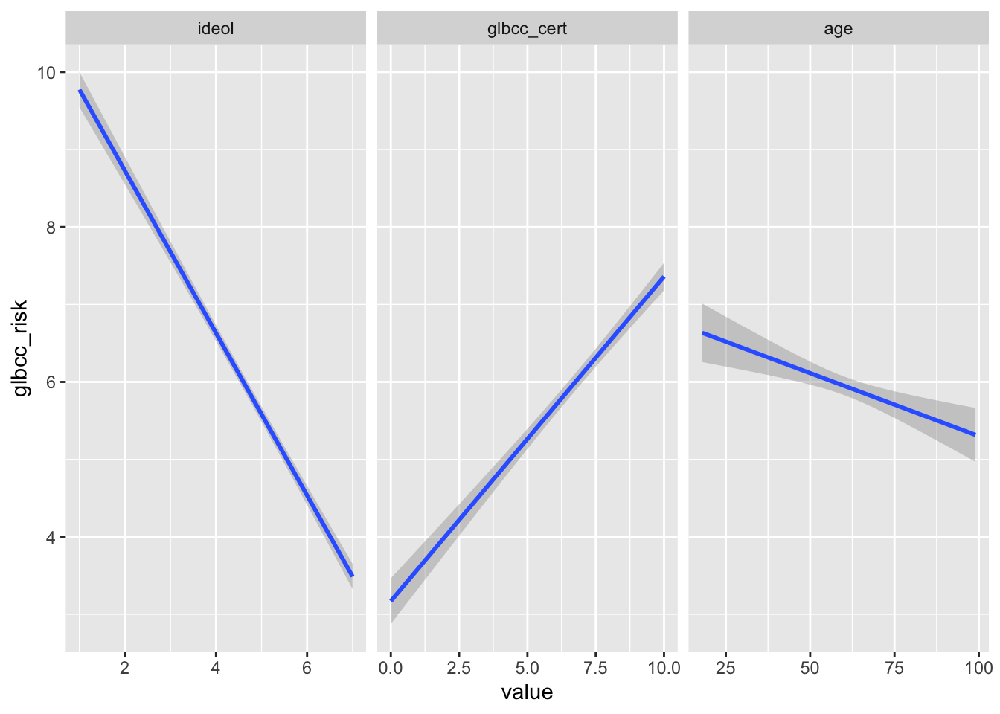
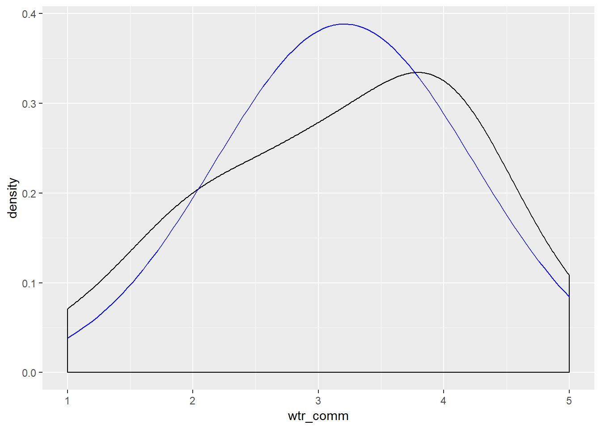
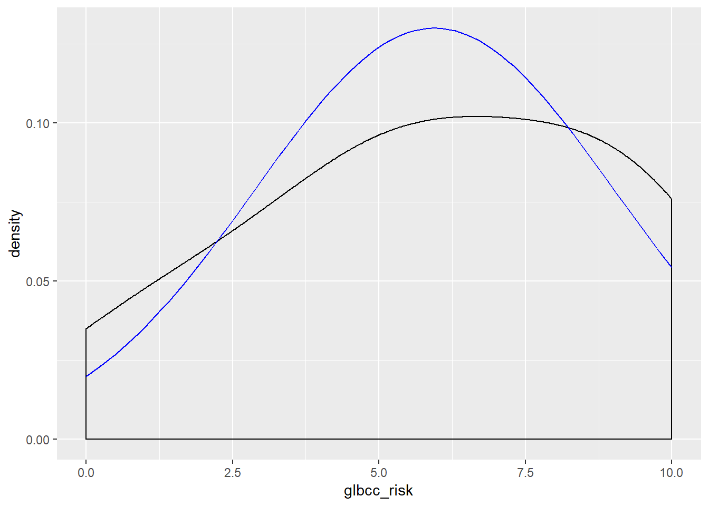
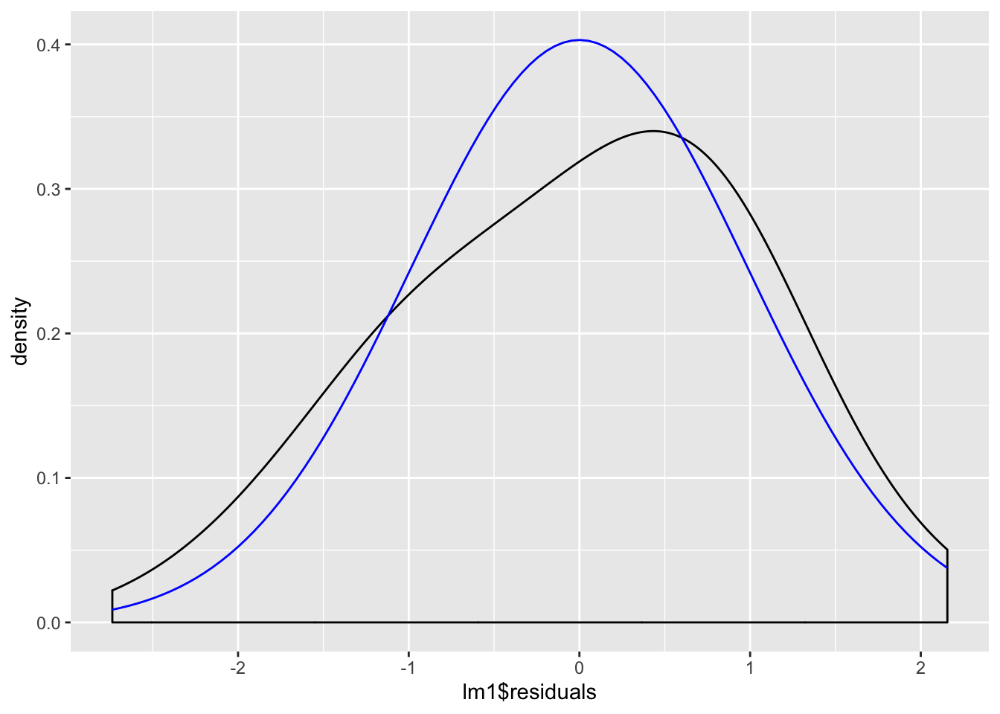

8 Bivariate Linear Regression
This lab will cover the basics of bivariate linear regression, introducing via manual calculations and R functions. The following packages are required for this lab:
- tidyverse
- psych
- car
- memisc
- stargazer
- reshape2
8.1 Bivariate Linear Regression by Hand
The goal of bivariate linear regression is to estimate a line (slope and intercept) that minimizes the error term (residual). The bivariate linear regression model is as follows:
\[y_i=\alpha+\beta x_i+\varepsilon_i\]
Where, y is the dependent variable, i is the unit of analysis, \(\alpha\) is the y-intercept, \(\beta\) is the slope, x is the independent variable, and \(\varepsilon\) is the error term (residuals).
When working with samples, we develop an estimated model:
\[\hat{y}=\hat{\alpha}+\hat{\beta} x\]
Where, the hat implies the coefficients are estimates from data.
This lab focuses on the ordinary least squares method to find \(\hat{\alpha}\) and \(\hat{\beta}\) such that if given a value of x you can return an estimate of y (\(\hat{y}\)).
To demonstrate, we will explore the relationship between ideology and concern for natural resources. The first step is to subset the variables of interest absent of NA values:
Reviewing the variables is an important first step:
## vars n mean sd median trimmed mad min max range skew kurtosis
## X1 1 2508 4.65 1.73 5 4.75 1.48 1 7 6 -0.45 -0.8
## se
## X1 0.03## vars n mean sd median trimmed mad min max range skew kurtosis
## X1 1 2508 7.57 2.22 8 7.82 2.97 0 10 10 -0.88 0.38
## se
## X1 0.04The ideology variable ranges from 1 “very liberal” to 7 “very conservative.” The cncrn_natres variable measures concern for natural resources ranging from 0 “not concerned” to 10 “extremely concerned.” The dependent and independent variables are defined as:
DV: Ideology
IV: Concern for natural resources
We need to find \(\hat{\alpha}\) and \(\hat{\beta}\) to develop the estimated bivariate regression model. Our first step is to find \(\hat{\beta}\). Recall the formula for \(\hat{\beta}\) is:
\[\hat{\beta}=\frac{cov(x,y)}{var(x)}\]
First create x and y variables to make the calculations simpler, with x being the independent variable and y being the dependent variable:
Next we calculate the cov(x,y) for the numerator and var(x) for the denominator:
r <- cor(ds.sub$x, ds.sub$y)
cov.xy <- cov(ds.sub$x, ds.sub$y, use = "complete.obs")
var.x <- var(ds.sub$x, na.rm = T)Finally, to calculate \(\hat{\beta}\):
Now that we have \(\hat{\beta}\), we can calculate \(\hat{\alpha}\) Recall the formula for calculating \(\hat{\alpha}\):
\[\hat{\alpha}=\bar{y} - \hat{\beta}\bar{x}\]
Calculate \(\bar{y}\) and \(\bar{x}\) from the sample data:
Use \(\bar{y}\), \(\bar{x}\), and \(\hat{\beta}\) to calculate \(\hat{\alpha}\):
Take a look at our calculated \(\hat{\alpha}\) and \(\hat{\beta}\):
## [1] 8.815973## [1] -0.2687128Now create some predicted values of y, concern for natural resources, based on our estimated regression model:
## [1] 7.203696 8.009834 7.203696 7.741122 7.741122 8.278547To draw inference using the estimated regression model we need to understand how x helps us understand y. More formally, we explore this relationship by evaluating the residuals associated to the coefficients \(\hat{\alpha}\) and \(\hat{\beta}\). We are interested in whether the coefficients are statistically different than zero.
-\(H_0\): \(\beta\) = 0
-\(H_1\): \(\beta\) \(\neq\) 0
Put simply, if the coefficient \(\hat{\beta}\) is zero, than that is to say that no value of x helps us understand y (\(0*x=0\)).
If we assume the residuals follow a normal distribution, then we can calculate the t-statistic to examine the coefficient’s statistical significance.
Recall that residuals are the differences in the observed values of the data and the predicted values of the estimated regression model. We can calculate residuals by subtracting the \(\hat{y}\) values we just calculated from the y values:
Now that we have the residuals, we need to calculate the residual standard error, which measures the spread of observations around the regression line we just calculated. We also need to know the residual standard error so that we can find the standard errors for the regression coefficients, which are then used to calculate the t scores of the coefficients. To calculate the residual standard error we need to find:
- The residual sum of squares
- The degrees of freedom for our model
Now we need to calculate the degrees of freedom. In this case, we have the intercept and the ideology variable, so we subtract two. Since we subset our data to remove all missing observations, we know the n size for x and y are the same:
## [1] 2506With the residual sum of squares and the degrees of freedom, we have what we need to find the residual standard error:
## [1] 2.167453With the residual standard error, we can now start to calculate the standard errors for our coefficients: \(\hat{\alpha}\) and \(\hat{\beta}\) (ideology). To calculate these, we need to find the total sum of squares of the independent variable, x:
## [1] 7520.929Now that we have the total sum of squares for the independent variable, we can find the standard errors of our coefficients:
## [1] 0.02499274For the standard error of \(\hat{\alpha}\), the calculation is different:
## [1] 0.1240024With the standard errors calculated, we can now find the corresponding t-statistics:
## [1] -10.75163## [1] 71.0952These t-statistics tell us how many standard deviations the coefficients are away from 0.
8.1.1 Calculating Goodness of Fit
Now we turn to \(R^2\), the measure how well the estimated regression model explains the variability of the data. To find \(R^2\), you need to know:
- The residual sum of squares
- The total sum of squares
- The explained sum of squares.
We already have the residual sum of squares. We found it by taking the sum of the residuals squared. Earlier we calculated the total sum of squares for our independent variable, x, but now we need to find the total sum of squares for our dependent variable, y.
## [1] 12315.88Now that we have the residual sum of squares and the total sum of squares, we can find the explained sum of squares. The explained sum of squares tells us how much of the variance of the dependent variable is accounted for by our model.
## [1] 543.0606\(R^2\) is found by dividing the explained sum of squares by the total sum of squares:
## [1] 0.044094344% of the variability of the data is explained by the estimated regression model.
8.1.1.1 Adjusted R Squared
There is a slightly more accurate measure of model fit, though, known as adjusted R squared. Adjusted R squared addresses some problems that are inherent in the R squared calculation, like the realtiy that R squared tends to increase as you add more predictors to your model, even if it’s more due to chance than actual predicting power. Adjusted R squared addresses this issue by penalizing the model for an increased number of predictors. Use this formula to find adjusted R squared
\[1-\frac{(1-R^{2})(n-1)}{n-k-1}\]
where k is the number of predictors in our model, not including the intercept(A). We can actually find this pretty simply. Recall that we are working with an n size of 2508. Our k value is 1, becuase we only have one predictor in the model (ideology). Find the adjusted R squared value:
## [1] 0.043712898.1.2 Checking Our Work
To check our work in the previous steps we will employ the native R functions for linear models: lm(). We provide the observed y and x values from data as an argument, separated by a tilda in the following format:
lm(y ~ x)
To demonstrate with the cncrn_natres and ideol variables:
Further, the summary() function will provide results of our model, including t-statistics and \(R^2\) values:
##
## Call:
## lm(formula = ds.sub$cncrn_natres ~ ds.sub$ideol)
##
## Residuals:
## Min 1Q Median 3Q Max
## -8.2785 -1.2785 0.3558 1.7215 3.0650
##
## Coefficients:
## Estimate Std. Error t value Pr(>|t|)
## (Intercept) 8.81597 0.12400 71.09 <0.0000000000000002 ***
## ds.sub$ideol -0.26871 0.02499 -10.75 <0.0000000000000002 ***
## ---
## Signif. codes: 0 '***' 0.001 '**' 0.01 '*' 0.05 '.' 0.1 ' ' 1
##
## Residual standard error: 2.167 on 2506 degrees of freedom
## Multiple R-squared: 0.04409, Adjusted R-squared: 0.04371
## F-statistic: 115.6 on 1 and 2506 DF, p-value: < 0.00000000000000022Let’s compare to our coefficients, residual standard error, coefficient standard errors, t scores, r squared, and adjusted r squared:
stats <- data.frame(name = c("Intercept", "Beta", "RSE", "IntSE", "BetaSE", "IntT",
"BetaT", "Rsqr", "AdjRsqr"),
values = c(alpha.hat, beta.hat, RSE, SEA, SEB, t.A, t.B,
r.sqr, adj.r2))
stats## name values
## 1 Intercept 8.81597293
## 2 Beta -0.26871281
## 3 RSE 2.16745310
## 4 IntSE 0.12400237
## 5 BetaSE 0.02499274
## 6 IntT 71.09519785
## 7 BetaT -10.75163278
## 8 Rsqr 0.04409434
## 9 AdjRsqr 0.043712898.2 Bivariate Regression in R
Suppose you are interested in the relationship between ideology and opinions about how much of Oklahoma’s electricity should come from renewable sources. The class data set includes these variables as ideol and okelec_renew. A new subset data set is created with these variables, absent missing observations, to develop an estimated regression model:
The okelec_renew variable is new to us, so we should examine its structure:
## Factor w/ 63 levels "0","1","10","100",..: 20 42 32 42 54 42 20 13 53 4 ...The variable appears to be a factor, which needs to be coerced as a numeric type. Recall the as.numeric() function:
Reassess the structure to ensure it is numeric:
## num [1:2524] 20 42 32 42 54 42 20 13 53 4 ...With the variable now numeric, examine it using the describe() function:
## vars n mean sd median trimmed mad min max range skew kurtosis
## X1 1 2524 32.56 15.94 34 33.03 20.76 1 63 62 -0.18 -0.96
## se
## X1 0.32Before proceeding, we should formalize a hypothesis. Perhaps we hypothesize that conservatives want a lower percentage of renewable energy than liberals. Using renewable energy as a function of ideology, we further specify our hypothesis as a more conservative ideology corresponds to a decrease preference for renewable energy. The null hypothesis is there is no difference in preference among ideologies.
First we examine the normality of both variables. Create a histogram and overlay it with a normal distribution curve, with the correct mean and standard deviation.:
ggplot(sub.ds, aes(renew)) +
geom_histogram(aes(y= ..density.. ), bins = 20) +
stat_function(fun = dnorm, args = list(mean = mean(sub.ds$renew),
sd = sd(sub.ds$renew)))
ggplot(sub.ds, aes(ideol)) +
geom_histogram(aes(y = ..density..), bins = 7) +
stat_function(fun = dnorm, args = list(mean = mean(sub.ds$ideol), sd = sd(sub.ds$ideol)))
Now construct the model:
##
## Call:
## lm(formula = sub.ds$renew ~ sub.ds$ideol)
##
## Residuals:
## Min 1Q Median 3Q Max
## -38.50 -11.26 2.74 12.74 35.19
##
## Coefficients:
## Estimate Std. Error t value Pr(>|t|)
## (Intercept) 43.9430 0.8772 50.10 <0.0000000000000002 ***
## sub.ds$ideol -2.4472 0.1767 -13.85 <0.0000000000000002 ***
## ---
## Signif. codes: 0 '***' 0.001 '**' 0.01 '*' 0.05 '.' 0.1 ' ' 1
##
## Residual standard error: 15.36 on 2522 degrees of freedom
## Multiple R-squared: 0.07069, Adjusted R-squared: 0.07032
## F-statistic: 191.8 on 1 and 2522 DF, p-value: < 0.00000000000000022Based on the results, ideology helps us understand preference for renewable energy. Further examination of the coefficient for ideol yields an estimate value of -2.45. This is interpreted as a -2.45 unit decrease in renewable energy preference for each unit increase in ideology. That is, an increase on the ideology scale (1 “liberal” to 7 “conservative”) results in a reduction in preference for renewable energy.
We should always visualize a relationship that we’re trying to convey. Start by constructing a scatter plot and adding a regression line:
ggplot(sub.ds, aes(x = ideol, y = renew)) +
geom_point(shape = 1) +
geom_smooth(method = lm) +
geom_jitter(shape = 1)
Sometimes it is more beneficial when visualizing the relationship to plot the regression line without first showing the scatter plot. To do this with ggplot2, simply do not include the geom_point() or geom_jitter() functions in the visualization.

8.3 The Residuals
Recall that when using Ordinary Least Squares regression, there are three assumptions made about the error terms:
- Errors have identical distributions
- Errors are independent of X and other error terms
- Errors are normally distributed
To look at the residual values for the estimated regression model, use the names() function:
## [1] "coefficients" "residuals" "effects" "rank"
## [5] "fitted.values" "assign" "qr" "df.residual"
## [9] "xlevels" "call" "terms" "model"In R we can examine the distribution of the residuals relatively simply. First assign the residuals to an object:
Now plot a histogram of the residuals, adding a normal density curve with the mean and standard deviation of our residuals:
ggplot(model, aes(model$residuals)) +
geom_histogram(aes(y = ..density..)) +
stat_function(fun = dnorm, args = list(mean = mean(model$residuals), sd = sd(model$residuals)))## `stat_bin()` using `bins = 30`. Pick better value with `binwidth`.
We also look at a QQ plot of the residuals:

8.4 Comparing Models
Suppose you wanted to create multiple bivariate models and contrast them. This is possible using the mtable() function from the memisc package. To demonstrate, we create three models looking at the relationship between an independent variable and concern about global climate change. The three independent variables will be ideology, certainty that humans cause climate change, and age. We start by creating a subset of our data and removing missing observations:
sub <- ds %>%
dplyr::select("glbcc_risk", "glbcc_cert", "age", "ideol") %>%
na.omit()
model1 <- lm(sub$glbcc_risk ~ sub$ideol)
model2 <- lm(sub$glbcc_risk ~ sub$glbcc_cert)
model3 <- lm(sub$glbcc_risk ~ sub$age)Using the mtable() function, we can create regression tables that compare all three of the models:
##
## Calls:
## model1: lm(formula = sub$glbcc_risk ~ sub$ideol)
## model2: lm(formula = sub$glbcc_risk ~ sub$glbcc_cert)
## model3: lm(formula = sub$glbcc_risk ~ sub$age)
##
## =========================================================
## model1 model2 model3
## ---------------------------------------------------------
## (Intercept) 10.821*** 3.171*** 6.927***
## (0.142) (0.150) (0.267)
## sub$ideol -1.048***
## (0.029)
## sub$glbcc_cert 0.419***
## (0.021)
## sub$age -0.016***
## (0.004)
## ---------------------------------------------------------
## R-squared 0.349 0.137 0.006
## N 2508 2508 2508
## =========================================================
## Significance: *** = p < 0.001; ** = p < 0.01;
## * = p < 0.05Alternatively, you can use the stargazer() function to create tables for your models. The stargazer() function is different in that you can specify a table created with text or with LaTex code that you can subsequently paste into a LaTex document. We’ll create a text table, but if you wanted to create a Latex table, you would use the type=latex argument.
##
## -----------------------------------------------------------------
## glbcc_risk
## (1) (2) (3)
## -----------------------------------------------------------------
## ideol -1.048***
## (0.029)
## glbcc_cert 0.419***
## (0.021)
## age -0.016***
## (0.004)
## Constant 10.821*** 3.171*** 6.927***
## (0.142) (0.150) (0.267)
## N 2,508 2,508 2,508
## R2 0.349 0.137 0.006
## Adjusted R2 0.349 0.137 0.005
## Residual Std. Error (df = 2506) 2.479 2.854 3.064
## F Statistic (df = 1; 2506) 1,344.256*** 397.859*** 14.232***
## -----------------------------------------------------------------
## *p < .1; **p < .05; ***p < .018.4.1 Visualizing Multiple Models
The three models can be visualized together by melting the data set into long form, with the three IVs as measure variables, then using ggplot2 and facet wrapping by independent variable. Including scales = "free_x" inside the facet_wrap() function will make the visualization so that each plot has its own independent x axis but is on the same fixed y axis.
melt(sub, measure.vars = c("ideol", "glbcc_cert", "age"),
variable.name = c("IV")) %>%
ggplot(., aes(value, glbcc_risk)) +
geom_smooth(method = lm) +
facet_wrap(~ IV, scales = "free_x")
8.5 Hypothesis Testing
Let’s do one more example of how we would hypothesis test with bivariate regression. In the class data set there is a variable, wtr_comm, that asks the respondent if they think the supplies of water in their region will be adequate to meet their community’s needs over the next 25 years. In essence, this measures concern about water supply for the community.
Start with a research question: What is the relationship between concern for water supply and concern about climate change?
Now build a theory: We could reasonably theorize that individuals who are more concerned about water supply are also likely more concerned about climate change. There is likely a link in their head between climate change and a shortened water supply.
Built on this theory, we can specify a hypothesis that individuals more concerned about climate change will be more concerned about water supply for their community. The null hypothesis is that there is no relationship between climate change concern and water concern.
We create a subset of the dataset that includes out two variables and remove missing observations:
Now examine the variables:
## vars n mean sd median trimmed mad min max range skew kurtosis
## X1 1 2524 3.21 1.03 3 3.24 1.48 1 5 4 -0.34 -0.68
## se
## X1 0.02## vars n mean sd median trimmed mad min max range skew kurtosis
## X1 1 2524 5.95 3.07 6 6.14 2.97 0 10 10 -0.32 -0.93
## se
## X1 0.06Note that the climate change risk variable goes from 0 to 10 and the water supply concern variable ranges from 1 to 5, with 1 being definitely no (the supplies of water are NOT enough) and 5 being definitely yes.
Now visualize the normality of the variables:
ggplot(new.ds, aes(wtr_comm)) +
geom_density(adjust = 3) +
stat_function(fun = dnorm, args = list(mean = mean(new.ds$wtr_comm), sd = sd(new.ds$wtr_comm)), color = "blue")
ggplot(new.ds, aes(glbcc_risk)) +
geom_density(adjust = 3) +
stat_function(fun = dnorm, args = list(mean = mean(new.ds$glbcc_risk), sd = sd(new.ds$glbcc_risk)), color = "blue")
Next, create the model. Recall that the dependent variable is concern for water supply and the independent variable is climate change risk.
Now examine and interpret the results:
##
## Call:
## lm(formula = new.ds$wtr_comm ~ new.ds$glbcc_risk)
##
## Residuals:
## Min 1Q Median 3Q Max
## -2.7366 -0.8442 0.1557 0.7096 2.1557
##
## Coefficients:
## Estimate Std. Error t value Pr(>|t|)
## (Intercept) 3.736575 0.042974 86.95 <0.0000000000000002 ***
## new.ds$glbcc_risk -0.089233 0.006423 -13.89 <0.0000000000000002 ***
## ---
## Signif. codes: 0 '***' 0.001 '**' 0.01 '*' 0.05 '.' 0.1 ' ' 1
##
## Residual standard error: 0.99 on 2522 degrees of freedom
## Multiple R-squared: 0.07109, Adjusted R-squared: 0.07072
## F-statistic: 193 on 1 and 2522 DF, p-value: < 0.00000000000000022The independent variable coefficient is about -.09, with a corresponding p-value \(\approx\) 0. This is interpreted as a one unit change in climate change risk corresponds with a -0.09 unit change in water supply concern. Remember that the water supply variable goes from 1 (there is definitely not enough water) to 5 (there definitely is enough water). These findings suggest that an individual more concerned about climate change is also more concerned about water supply.
We examine the normality of the residuals:
ggplot(lm1, aes(lm1$residuals)) +
geom_density(adjust = 3) +
stat_function(fun = dnorm, args = list(mean = mean(lm1$residuals), sd = sd(lm1$residuals)), color = "blue")
Now build a good visualization that would be worthy of a paper:
ggplot(new.ds, aes(wtr_comm, glbcc_risk)) +
geom_smooth(method = lm) +
coord_cartesian(ylim = c(2, 9), xlim = c(1, 5)) +
ggtitle("Concern for Water and Climate Change") +
xlab("Considers Water Supply Adequate") +
ylab("Perceived Climate Change Risk") +
scale_x_continuous(breaks=c(1, 2 ,3 ,4 ,5), labels=c("Definitely No",
"Probably No", "Unsure",
"Probably Yes", "Definitely Yes")) +
theme_bw()
Our findings support that individuals less concerned about climate change are also less concerned about their community’s water supply.